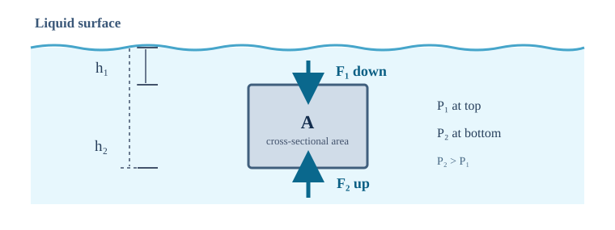

Surface flotation
For a fixed-volume uniform object with mean density ρobject < ρfluid, part of the body may remain above the surface at equilibrium.
GRADE XI · FLUID MECHANICS · TOPIC 6.1
Understand why fluids push upward, derive the buoyant-force equation, explain floating ships, and solve buoyancy problems with the right assumptions and SI units.
V95-B1 public study preview, not a completed or officially approved Unit 6 course. Prepared from the owner's private Topic 6.1 teaching master (compiled pp. 17–50), the merged academic audit and the supplied FBISE assessment framework. These are fresh teaching explanations, not copied NBF pages. Original printed NBF pp. 89–91, Figure 6.1 and exact Example/Assignment 6.1 wording still need source-by-source comparison before any “textbook-exact” claim. Question-level FBISE certification remains pending.
Both topic-level classifications above are confirmed directly against the supplied official FBISE HSSC-I assessment framework (PDF p. 11). These labels do not certify every individual practice item.
01 · THE PHYSICS
Fluid pressure acts on an immersed surface in every direction. The lower face of a submerged upright cylinder is at a greater depth than the upper face, so its upward pressure force is larger than the downward pressure force on the top. The two vertical forces do not cancel: their resultant is upthrust.

For a uniform-density liquid at rest, the gauge pressure at depth h is given by:
For an open liquid surface, absolute pressure is atmospheric pressure plus ρfgh. The same atmospheric contribution acts at the top and bottom and cancels in their pressure difference.
02 · STEP-BY-STEP DERIVATION
Consider a rigid, completely immersed, upright cylinder of constant horizontal cross-sectional area A. The top lies at depth h₁, the bottom at h₂, with h₂ greater than h₁. Assume static liquid, constant density and gravitational field, and no other forces contributing to the liquid-pressure resultant.
Archimedes’ principle: A body partly or completely immersed in a fluid experiences an upward buoyant force equal to the weight of fluid displaced. For a partially immersed body, Vdisplaced is only the submerged volume.
03 · FORCE BALANCE
If an object floats freely at rest with no other vertical contact or support force, the sum of forces is zero:
Combining this with Archimedes’ principle gives Vdisplaced = m/ρf. A heavier load therefore requires a larger volume of fluid to be displaced, provided the body can still float safely.
For a fixed-volume uniform object with mean density ρobject < ρfluid, part of the body may remain above the surface at equilibrium.
If ρobject = ρfluid, the fully submerged body can be neutrally buoyant under the ideal static model.
If ρobject > ρfluid, even complete immersion does not provide enough buoyancy to balance its weight without other support.
For a uniform floating object, the immersed fraction follows by replacing mass with mean density times total volume:
Supplementary illustration: A uniform block of density 600 kg/m³ floating in water of density 1000 kg/m³ has an immersed fraction of 600/1000 = 0.60, or 60%. For irregular hulls, submerged height cannot be obtained from this fraction without their actual geometry.
04 · ENGINEERING APPLICATION
A solid steel block is generally denser than water, but a large hollow hull encloses air and can displace a substantial mass of seawater while keeping the average density of the whole loaded ship low enough to float. Cargo, passengers, fuel and machinery all contribute to total weight.
The hull must displace enough water to support its entire loaded mass. Adding cargo increases the needed displaced volume and generally the draft.
A floating ship must also resist capsizing and tend to return upright after tilting. Weight placement, ballast and hull shape matter.
The structure must withstand operating forces and prevent unacceptable deformation or flooding. Buoyancy alone does not certify seaworthiness.
In denser seawater the same ship needs to displace less volume than in freshwater, so it generally floats higher when its mass and hull configuration remain the same.
For a submerged vessel of approximately fixed outside displaced volume, water taken into ballast tanks raises the vessel's total weight without greatly changing its upthrust. Releasing ballast water reduces its weight. Ideal neutral buoyancy occurs when mtotal = ρfluidVexternal. Actual submarines also use control surfaces when moving.
05 · MEASURING BUOYANCY
Imagine a solid hanging stationary from a spring balance while fully immersed in water, without touching the vessel floor. Its true weight acts downward; the upward forces are buoyancy and balance tension.
The object has not lost mass or actual gravitational weight. Water supplies some of the upward force, so the supporting balance registers less. If the immersed object's true weight and apparent weight are both known, buoyancy is their difference.
06 · WORKED APPLICATIONS
The first two calculations use the data described as NBF Example 6.1 and Assignment 6.1 in the private teacher-prepared compilation. Their solutions have been independently audited, but the exact wording and data have not yet been cross-checked against original printed NBF pp. 89–91; they are not reproduced as verbatim textbook questions. The third and fourth are teacher-developed supplementary illustrations.
A cube with edge length 10 cm is completely dipped in water. Find the upthrust using ρwater = 1000 kg/m³ and g = 9.8 m/s².
Why fully immersed matters: a partly submerged cube would displace a smaller volume and experience a correspondingly smaller upthrust.
A fully submerged iron object has density 7.8 g/cm³ and appears 200 N lighter in water. Determine (a) its volume and (b) its true weight in air. Assume ρwater = 1000 kg/m³, g = 9.8 m/s², and negligible buoyancy of air.
Answers: (a) V ≈ 2.04 × 10⁻² m³; (b) W ≈ 1560 N. The 200 N is the apparent loss, not the true weight.
A body of mass 5 kg is held fully immersed in water and displaces 0.002 m³. Find its true weight, buoyant force and stationary spring-balance reading.
A small boat system has a specified maximum allowed displaced-water volume of 0.80 m³. Its total loaded mass is 900 kg. Water density is 1000 kg/m³. Is the load supportable within the specified displacement limit?
This is an idealized hydrostatic capacity comparison, not a complete marine safety certification. Stability, freeboard and structural strength require separate checks.
07 · EXPLORE THE FORMULA
Enter the fluid density and the volume of fluid displaced. Optionally compare the resulting force with a specified body weight. This is an ideal hydrostatic calculation, not a boat-loading or real-world safety simulator.
Model boundary: The force comparison applies to the stated instantaneous immersed volume. A body with a different available total volume can displace additional fluid as it moves; comparing these numbers does not by itself predict a final floating depth, acceleration through water, or vessel stability. The calculation is local to your device and records no personal data or grades.
08 · SELF-CHECK & REVISION
Not in the ideal model with constant water density and fixed cube volume. Both top and bottom pressures rise, but their difference depends on the fixed face separation.
No. The complete hollow ship, including air and load, can displace enough water. The material steel itself generally remains denser than water.
No. Buoyancy reduces how much of the unchanged gravitational weight must be supported by the balance.
No. It holds for a freely floating or neutrally buoyant object in vertical equilibrium without other support forces. A supported or accelerating immersed object may have unequal weight and buoyancy.
For the same total mass, Vdisplaced = m/ρfluid. A larger fluid density requires less displaced volume, provided the vessel's configuration and loading are unchanged.
Yes. Buoyancy does not establish restoring stability, freeboard, damage resistance, structural strength or compliance with safe-loading requirements.
Hydrostatic gauge pressure: p = ρfgh
Archimedes: FB = ρfgVdisplaced
Free-floating equilibrium: FB = mg
Required volume: Vdisplaced = m/ρf
Static apparent weight: Wapp = W − FB
Floating fraction: Vdisplaced/Vtotal = ρobject/ρfluid
Return to the integrated Unit 6 Desk to explore the original Archimedes simulation, practise 80 provisional source-based MCQs and revisit the topic's revision card.
Provenance: prepared combined master pp. 17–50, V94-C2.1 source audit (PR #89), official supplied FBISE framework p. 11. Calculations are independently verified against the prepared source's givens. The private teacher master and original NBF textbook figures remain unpublished; per-question curriculum verification and final teacher signoff are pending.